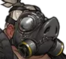

Counters to Reaper
Roadhog
Although Reaper is able to use Wraith Form to avoid Roadhog's Chain Hook, a smart Roadhog will follow the Reaper and catch him before Wraith Form is off cooldown. Roadhog's weapon can kill Reaper in one or two clear shots. Roadhog can survive a full round of shots from Hellfire Shotgun with Take a Breather. On top of this, Chain Hook can interrupt Reaper's Death Blossom.
McCree
McCree counters Reaper for many of the same reasons that Roadhog does. Although Wraith Form allows him to avoid a standard Flashbang combo, McCree can chase Reaper down and kill him after. McCree is able to fight Reaper at longer ranges where Hellfire Shotguns are ineffective. Similar to Roadhog, Flashbang can interrupt Death Blossom.
Mei
Mei's ability to become invulnerable counters Reaper's flanks or Death Blossom. This gives her teammates time to catch up and kill Reaper. Reaper's lack of combat mobility allows Mei to freeze him very easily.
Zarya
Reaper needs to chain kills to keep his health up. Zarya can counter this by shielding herself or her teammates, denying Reaper the kills. Particle Barrier makes her very tanky in one-on-ones.